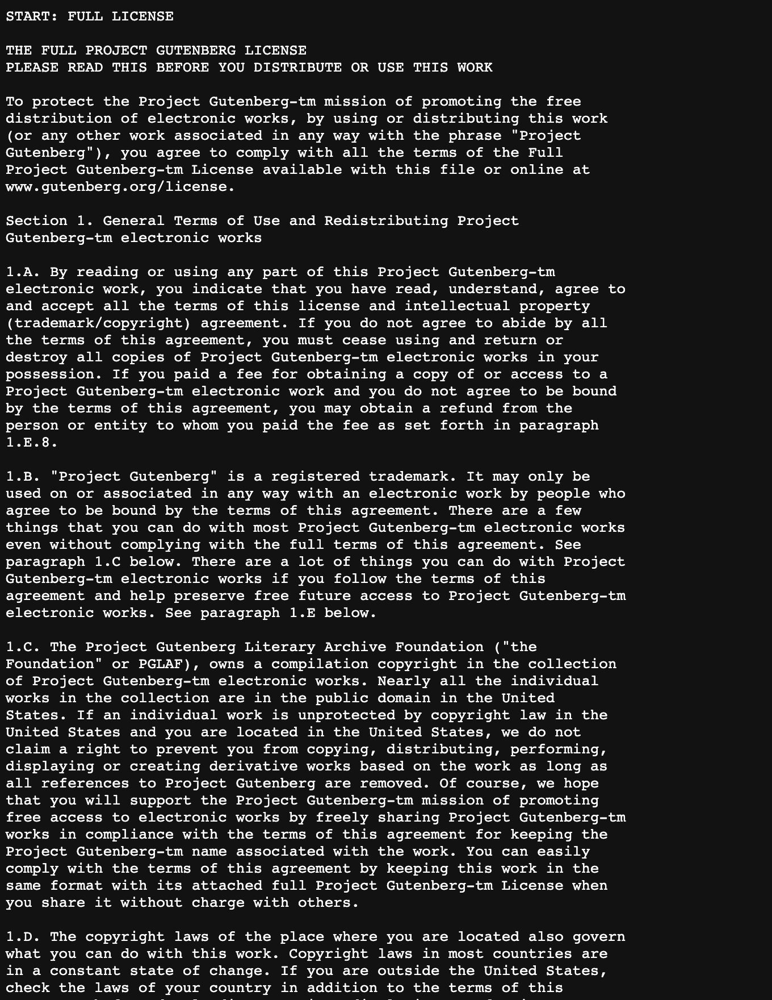
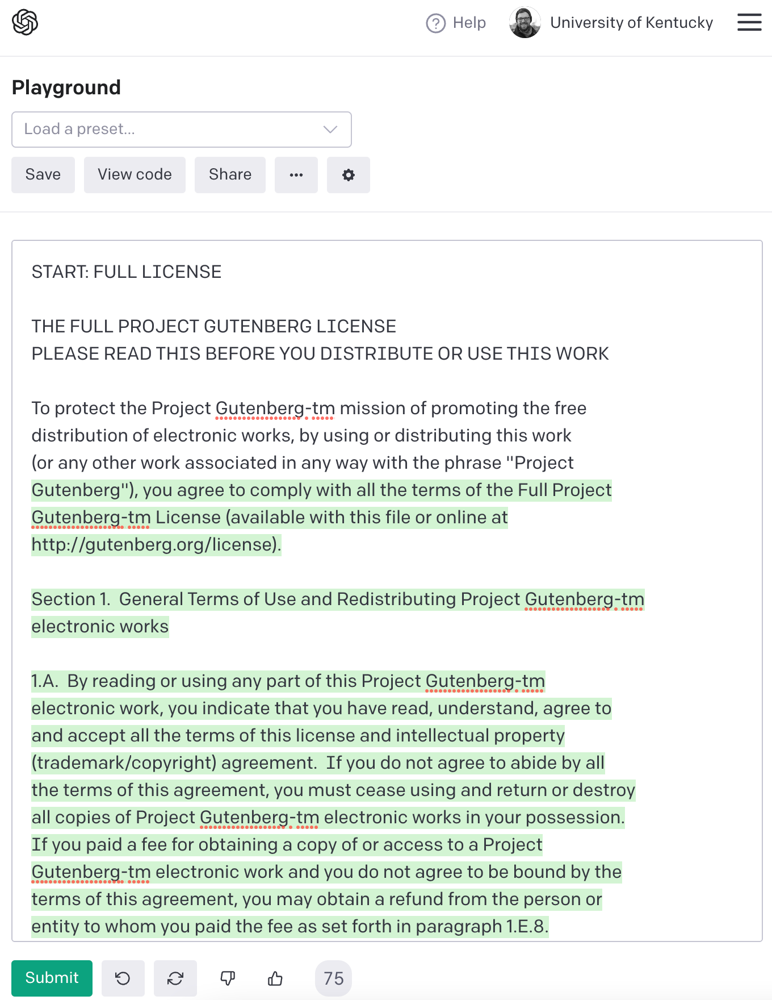

Data Processing
Most data analysis time is spent on data wrangling
Before we even get to substantive issues of “text normalization” and “tokenization”, we need to also deal with basic data wrangling. For example, let’s say I wanted to download 4 works from Mary Shelly from Project Gutenberg and calculate what the most common 4 word sequences in her work are, I might quickly write some code like this.
# python
# urllib.request will download the books
import urllib.request
# using a dictionary just to show the title of books here in the code.
shelley_dict = {"Tales and stories": "https://www.gutenberg.org/cache/epub/56665/pg56665.txt",
"Frankenstein" : "https://www.gutenberg.org/files/84/84-0.txt",
"The Last Man" : "https://www.gutenberg.org/cache/epub/18247/pg18247.txt",
"Mathilda" : "https://www.gutenberg.org/cache/epub/15238/pg15238.txt"}
# A collector list for all of the 4 word sequences
all_grams4 = []
# Loop over every url
for url in shelley_dict.values():
book_dat = urllib.request.urlopen(url)
# this deals with the
# 1. character encoding
# 2. trailing whitespace
# 3. simplistic tokenization on spaces
book_lines = [line.decode("utf-8-sig").strip().split(" ")
for line in book_dat]
# This flattens the list above into one long list of words
book_words = [word
for line in book_lines
for word in line
if len(word) > 0]
# Collector list of 4grams from just this book
grams4 = []
# loop over every index postion up to 4 words short of the end.
for i in range(len(book_words)-4):
# glue together 4 word sequences with "_"
grams4.append("_".join(book_words[i:(i+4)]))
# Add this book's 4grams to all of the books' 4grams
all_grams4 += grams4The list all_grams4 contains a list of every token of 4grams in these books. Let’s count them up and look at the top 10 most frequent 4 word phrases Mary Shelley used in her writing!
from collections import Counter
gram_count = Counter(all_grams4)
top10 = gram_count.most_common(10)
for gram in top10:
print(gram)('Project_Gutenberg_Literary_Archive', 52)
('the_Project_Gutenberg_Literary', 44)
('Gutenberg_Literary_Archive_Foundation', 34)
('the_terms_of_this', 32)
('Project_Gutenberg-tm_electronic_works', 30)
('at_the_same_time', 25)
('to_the_Project_Gutenberg', 24)
('*_*_*_*', 22)
('in_the_United_States', 21)
('for_the_sake_of', 21)So, either Mary Shelly was obsessed with the Project Gutenberg Literary Archive, and the terms of this and for the sake of, or something else is going on.
As it turns out, every plain text Project Gutenberg book has header information with a short version of the users’ rights and other metadata information, and then at the end has the entirety of the Project Gutenberg License, which is written in legal language.
In any corpus building project, decisions need to be made about how header, footer, and general boilerplate data like this will be treated. There are handy packages for python and R that make stripping out the legal language easy
- python:
gutenbergpy - R:
gutenbergr
Or, you might decide to leave it all in. It seems pretty clear this is the approach to the dataset they trained GPT-3 on, because if you prompt it wit the first few lines of the Project Gutenberg license, it will continue it.


Markup is everywhere
Setting aside the issue of headers and footers, we also need to deal with the fact that “markup” is everywhere. Even in the relatively plain text of Project Gutenberg books, they use underscores _ to indicate italics or emphasized text.
# python
underscore_lines = [line
for line in book_lines
if any(["_" in word
for word in line])]
for i in range(4):
print(" ".join(underscore_lines[i]))Mathilda _is being published
of_ Studies in Philology.
novelette _Mathilda_ together with the opening pages of its rough
draft, _The Fields of Fancy_. They are transcribed from the microfilm